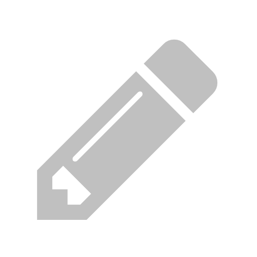

Impromptu Writing Made Easy
Jot down quick drafts whenever inspiration strikes. The first few words are always the hardest to write. Ponder is a ten file scratch pad that works in your web browser. It's designed to mimic the simplicity and distraction free writing experience of electronic word processors from the past.
Ponder is private. Although it runs in your browser it was designed to work completely offline. Documents are stored in your local browser storage and are not transmitted to a central server.
When you buy Ponder, you get a perpetual license for the current version and a download that you can run from your own computer. You also support the author so that I can create Ponder improvements and other great software.